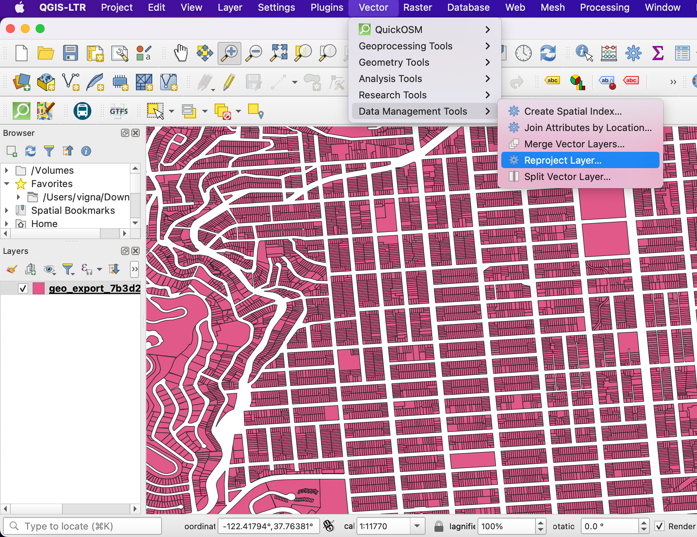
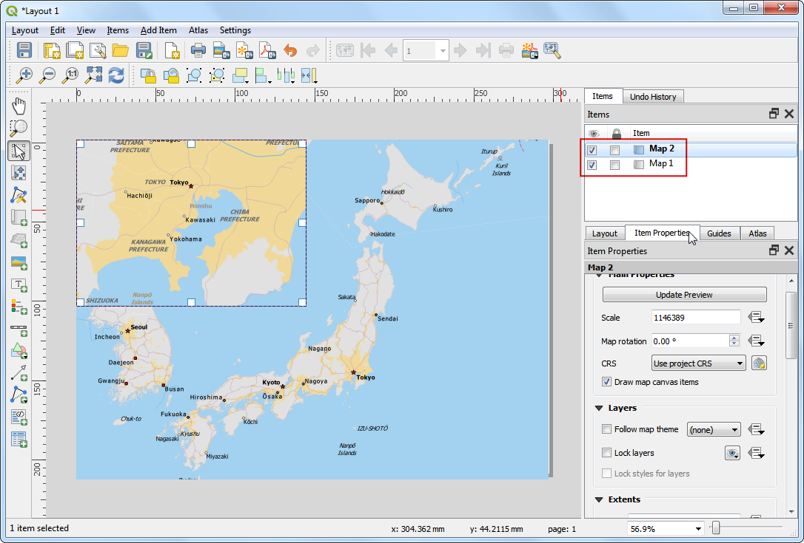

Realizar Consultas Espaciales (QGIS3)¶
Las consultas espaciales son centrales a varios tipos de análisis SIG. Las consultas espaciales le permiten seleccionar objetos espaciales en una capa por su relación espacial (intersecta, contiene, toca, etc.) con objetos espaciales de otra capa. en QGIS, esta funcionalidad está disponible mediante las herramientas de Procesamiento Seleccionar por Ubicación y Extraer por Ubicación.
Vista general de la tarea¶
Estaremos trabajando con 2 capas de datos para la ciudad de Melbourne, Australia. Dadas las capas de datos para las tabernas y bares en la ciudad y las ubicaciones de todas las estaciones de metro, vamos a descubrir todos los bares y tabernas dentro de los 500 metros de una estación de metro.
Otras habilidades que aprenderá¶
Escoger una proyección apropiada y reproyectar datos vector.
Crear zonas de influencia.
Trabajar con el formato de datos geopackage (.gpkg).
Obtener los datos¶
La Plataforma de Datos Abiertos de la Ciudad de Melbourne provee varios conjuntos de datos listos para el SIG para la ciudad.
Descargar el conjunto de datos Estaciones de Tren Metro con Información de Accesibilidad por Metro Trains Melbourne. Exporte los datos en el formato Original.

Descargue el conjunto de datos Bares y tabernas, con capacidad de clientes por el Censo de Uso de la Tierra y Empleo (CLUE) de la Ciudad de Melbourne. Exporte los datos como CSV.
Para su comodidad, puede descargar directamente una copia de los conjuntos de datos del enlace abajo:
metro_stations_accessbility.zip
Bars_and_pubs__with_patron_capacity
Fuente de Datos: [CITYOFMELBOURNE]
Procedimiento¶
Localice el archivo
metro_stations_accessbility.zipen el Explorador QGIS y expándalo. Seleccione el archivometro_stations_accessbility.shpy arrástrelo a la pantalla. Una nueva capametro_stations_accessbilityserá cargada en el panel Layers.

La capa de datos para bares y tabernas está en el formato CSV. Para cargarla en QGIS, vaya a . ( Ver Importar Hojas de Cálculo o archivos CSV (QGIS3) para más detalles en la importación de archivos CSV)

En el diálogo Administrador de Fuentes de Datos | Texto Delimitado, explore y seleccione el archivo descargado
Bars_and_pubs__with_patron_capacity.csvpara el Nombre de archivo. Las columnas campo X y campo Y debería seleccionarse automáticamente comocoordenada xycoordenada yrespectivamente. Clic en Agregar.

You will see a new
Bars_and_pubs__with_patron_capacitylayer added to the Layers panel. Both of the input layers are in the Geograhpic Coordinate Reference System (CRS)EPSG:4326 WGS84. For performing spatial analysis, it is recommended to use a Projected Coordinate Reference System (CRS). So we will now re-project both the layers to an appropriate regional CRS that minimizes distortions and allows us to work in units of distance such as meters instead of degrees. Go to .

Busque y localice la herramienta . Haga doble-clic para iniciarla.

Seleccione
Bars_and_pubs__with_patron_capacitycomo la Capa de entrada. Clic el botón Seleccionar SRC``junto al :guilabel:`SRC Destino.

Cuando seleccione un sistema de referencia de coordenadas para su análisis, el primer lugar para mirar es un SRC regional para el área de interés. Para Australia, la Cuadrícula de Mapa de Australia (MGA) 2020 es un sistema de cuadrícula basado en UTM que es usado para mapeo local y regional. Melbourne cae en la Zona 55 UTM, por lo que podemos seleccionar el SRC
GDA 2020 / MGA zone 55 EPSG:7855.

Nota
Si no está seguro de un SRC local para la región en la que está trabajando, seleccione un SRC para la zona UTM basado en el datum WGS84 que es una elección segura. Puede descubrir el numero de zona UTM de su región usando las Zonas de Cuadrícula UTM del Mundo.
A continuación, haga clic en el botón … junto a Reprojected y seleccione
Guardar en GeoPackage. Geopackage es el formato recomendado para datos espaciales abiertos y el formato de intercambio de datos predeterminado para QGIS3. Un solo archivo GeoPackage.gpkgpuede contener múltiples capas vectoriales y ráster.

Nombre el geopackage como
spatialqueryy clic Guardar.

Cuando se le pida un nombre de capa, ingrese
bars_and_pubsy clic Aceptar. Clic Ejecutar para reproyectar la capa.

La ventana se cambiará a la pestaña Bitácora y verá que el algoritmo se ejecuta y crea la nueva capa de salida
bars_and_pubs.

Ahora vamos a reproyectar la capa
metro_stations_accessbility. Cámbiese de vuelta a la pestaña Parámetros en la ventana Reproyectar capa. Seleccionemetro_stations_accessbilitycomo la Capa de entrada. Mantenga el mismo SRC Destino. A continuación, clic en el botón … junto a Reprojected y seleccione Guardar a Geopackage. Seleccione el mismo archivo de salidaspatialquery(Recuerde que un solo archivo geopackage puede contener múltiples capas, por lo que guardaremos la nueva capa en el mismo archivo geopackage). Ingresemetro_stationscomo el Nombre de capa. Clic en Ejecutar.

De vuelta en la ventana principal QGIS, veremos 2 nuevas capas agregadas en el panel Capas:
bars_and_pubsymetro_stations. Puede desactivar la visibilidad de las capas originales. Ahora, estamos listos para hacer la consulta espacial. Como estamos interesados en seleccionar bares y tabernas a 500 m de las estaciones de metro, el primer paso es crear un área de influencia alrededor de las estaciones de metro que represente nuestra área de búsqueda. Busque y localice la herramienta en la Caja de herramientas de Procesos y haga doble-clic para iniciarla.

In the Buffer dialog, select
metro_stationsas the Input layer. Set500meters as the Distance. Save the output to the samespatialquerygeopackage and entermetro_stations_buffersas the Layer name. Click Run.

Verá una nueva capa
metro_stations_bufferscargada en el panel Capas. Ahora podemos averiguar qué puntos de la capabars_and_pubscaen en los polígonos de la capametro_station_buffers. Localice la herramienta desde la Caja de herramientas de Procesos y haga doble-clic para iniciarla.

Nota
Extraer por Ubicación creará una nueva capa con los objetos espaciales que coincidan con la consulta espacial. Si sólo quiere seleccionar los objetos espaciales, use la herramienta Seleccionar por Localización.
En el diálogo Extraer por ubicación, seleccione
bars_and_pubscomo Extraer objetos de. MarqueIntersectancomo el Predicado geométrico. Definametro_station_bufferscomo Comparando los objetos de. Guarde la salida al geopackagespatialquerycomo la capaselected. Clic en Ejecutar.

Una vez que termine el procesamiento, verá la capa
selectedagregada al panel Capas. Note que esta capa sólo contiene puntos debars_and_pubsque caen dentro de los polígonos del área de influencia.

Nuestro análisis está completo. Puede que note que los polígonos del área de influencia lucen una forma oval. Esto es debido a que nuestro SRC de Proyecto aún está definido como EPSG:4326 WGS84. Para visualizar mejor los resultados, puede ir a y seleccionar
GDA 2020 / MGA zone 55 EPSG:7855que usamos para el análisis. Una vez que se defina este SRC, el área de influencia aparecerá con la forma correcta.

If you want to give feedback or share your experience with this tutorial, please comment below. (requires GitHub account)